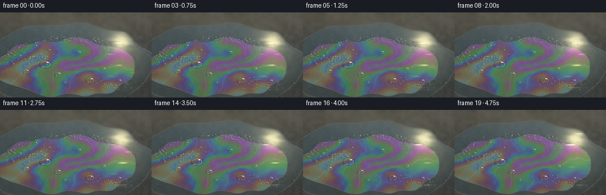
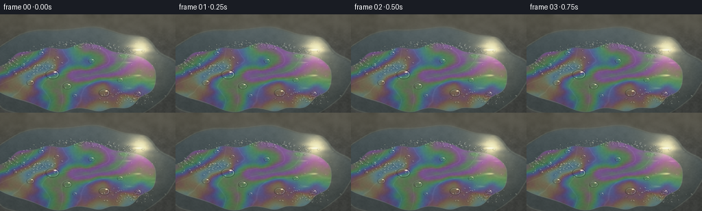
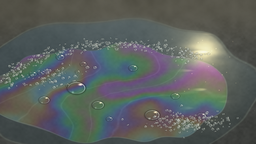

CODING AGENTS AS PIXEL WORLD MODELS
traex/GPT-6.1-Sol · phygen_085
点击播放 · 原生 RGB 像素
逐轮保存的候选
回放视频、检查图与代码变化。
每份候选均可单独播放。实际图片检查记录在下方工具轨迹中。
候选 01播放与检查图
点击播放 · 原生 RGB 像素


展开代码变化
--- 上一保存版本
+++ 本次保存版本
@@ -0,0 +1,162 @@
+from pathlib import Path
+import json
+import numpy as np
+from PIL import Image, ImageFilter
+import artifact_io
+
+ROOT = Path(__file__).resolve().parent
+SPEC = json.loads((ROOT/'task_spec.json').read_text())
+W,H = SPEC['width'],SPEC['height']
+S = 3
+WW,HH=W*S,H*S
+rng=np.random.default_rng(8539)
+x,y=np.meshgrid(np.arange(WW,dtype=np.float32)/S,np.arange(HH,dtype=np.float32)/S)
+
+def noise(nx,ny):
+ a=rng.random((ny,nx)).astype(np.float32)
+ return np.array(Image.fromarray(a,mode='F').resize((WW,HH),Image.Resampling.BICUBIC))
+
+n0=noise(6,5); n1=noise(13,10); n2=noise(40,25); n3=noise(120,80)
+fine=rng.random((HH,WW),dtype=np.float32)
+
+def smooth(a,b,v):
+ q=np.clip((v-a)/(b-a),0,1)
+ return q*q*(3-2*q)
+
+# Fixed granular, slate-like substrate. All motion belongs to the surface liquid.
+grain=9*(n2-.5)+8*(n3-.5)+5*(fine-.5)
+base=np.empty((HH,WW,3),np.float32)
+base[:]=[71,73,70]
+base+=grain[...,None]
+base+=(16*n0+7*n1-10)[...,None]
+base+=np.exp(-((y-4)/40)**2)[...,None]*np.array([22,18,10])
+# Random pinprick mineral inclusions embedded in the stone.
+for _ in range(850):
+ cx,cy=rng.uniform(0,W),rng.uniform(0,H)
+ r=rng.uniform(.1,.45)
+ d=np.exp(-((x-cx)**2+(y-cy)**2)/(r*r))
+ base+=d[...,None]*rng.uniform(-12,16)
+
+# Bubbles lying on the liquid, with dense microfoam at the edge and scattered
+# clear caps on the thin detergent sheet.
+bubbles=[]
+for _ in range(195):
+ u=rng.uniform(-2.98,-.72)
+ cx=116+111*np.cos(u)+rng.normal(0,5)
+ cy=91+47*np.sin(u)+rng.normal(0,3)
+ r=rng.uniform(.45,2.1)
+ bubbles.append((cx,cy,r,rng.uniform(0,6.28)))
+for _ in range(115):
+ cx=rng.normal(187,21); cy=rng.normal(122,5)
+ r=rng.uniform(.35,1.8)
+ bubbles.append((cx,cy,r,rng.uniform(0,6.28)))
+for _ in range(80):
+ cx=rng.normal(52,19); cy=rng.normal(78,7)
+ r=rng.uniform(.55,2.4)
+ bubbles.append((cx,cy,r,rng.uniform(0,6.28)))
+for cx,cy,r in [(76,88,8.8),(98,105,5.7),(44,100,5.2),(152,115,7.1),(175,96,4.1),(133,68,4.2),(60,57,4),(201,116,4.5),(33,74,3.5),(109,119,3.1),(83,64,3.2)]:
+ bubbles.append((cx,cy,r,rng.uniform(0,6.28)))
+bubbles.sort(key=lambda b:b[1])
+
+
+def bubble_render(img,cx,cy,r,phase,t):
+ cx+=.20*t*np.sin(phase)+.20*np.sin(t*1.2+phase)
+ cy+=.12*t*np.cos(phase)
+ ay=r*.67
+ x0=max(0,int((cx-r-1.5)*S)); x1=min(WW,int((cx+r+1.5)*S)+1)
+ y0=max(0,int((cy-ay-1.5)*S)); y1=min(HH,int((cy+ay+1.5)*S)+1)
+ if x1<=x0 or y1<=y0:return
+ xx=x[y0:y1,x0:x1]; yy=y[y0:y1,x0:x1]
+ u=(xx-cx)/r; v=(yy-cy)/ay
+ rho=np.sqrt(u*u+v*v)
+ # Contact ring and a small cast shadow secure each bubble to the wet plane.
+ shadow=np.exp(-((rho-1.015)/(.14+.1/r))**2)*.30
+ local=img[y0:y1,x0:x1]
+ local*=1-shadow[...,None]
+ z=np.sqrt(np.maximum(0,1-rho*rho))
+ fresnel=.018+.80*(1-z)**3.6
+ interference=.5+.5*np.cos((410+90*v+35*np.sin(u*4+phase+t*.11))*z[...,None] if False else 0)
+ thick=390+90*v+32*np.sin(u*3+phase+t*.13)
+ colors=.5+.5*np.cos(4*np.pi*1.33*thick[...,None]*np.maximum(.1,z[...,None])/np.array([650,525,450]))
+ # A clear interior shows the stone below; grazing reflection has soap colors.
+ sky=np.zeros_like(local)+np.array([154,177,181])
+ sky+=colors*np.array([38,32,39])
+ refl=np.exp(-((u-.46)**2/.037+(v+.60)**2/.016))
+ lower=np.exp(-((rho-.87)/.07)**2)*smooth(.05,.85,v)
+ cap=local*(.91+.07*z[...,None])+sky*fresnel[...,None]*.43
+ cap+=lower[...,None]*np.array([29,33,32])
+ edge=np.exp(-((rho-.97)/(.035+.085/r))**2)
+ anglelight=np.clip(.46+.39*u-.46*v,0,1)
+ cap+=edge[...,None]*anglelight[...,None]*(np.array([161,166,153])+colors*35)
+ cap+=refl[...,None]*np.array([280,246,181])
+ # Reflection on the opposite side remains much fainter.
+ cap+=np.exp(-((u+.40)**2/.012+(v-.70)**2/.035))[...,None]*np.array([55,59,56])
+ alpha=1-smooth(.96,1.03,rho)
+ img[y0:y1,x0:x1]=local*(1-alpha[...,None])+cap*alpha[...,None]
+
+
+def render(k):
+ t=k/SPEC['fps']
+ # An irregular transparent puddle, bounded by a smooth meniscus.
+ rr=np.sqrt(((x-115)/143)**2+((y-90)/71)**2)
+ boundary=rr+.035*np.sin(x*.069+y*.077)+.035*(n1-.5)
+ wet=1-smooth(.965,1.015,boundary)
+ img=base.copy()
+ water_color=base*.59+np.array([21,28,30])
+ # Reflected sky and warm sun, scattered by shallow capillary waves.
+ wave=.6*np.sin(y*.35+x*.043-t*.45)+.4*np.sin(y*.66-x*.038+t*.31)+.25*np.sin(x*.16+y*.15-t*.2)
+ sky_gradient=np.clip((120-y)/120,0,1)
+ water_color+=sky_gradient[...,None]*np.array([14,21,27])
+ reflection=np.exp(-((x-208+5*np.sin(y*.053)) / 37)**2-((y-48)/62)**2)
+ water_color+=reflection[...,None]*np.array([46,39,24])
+ sun=np.exp(-((x-205-3*wave)/14)**2-((y-50)/13)**2)
+ trail=np.exp(-((x-205+6*np.sin(y*.12+t*.15))/13)**2-((y-74)/45)**2)
+ glitter=smooth(.76,1.17,wave)*trail
+ water_color+=sun[...,None]*np.array([148,130,85])
+ water_color+=glitter[...,None]*np.array([124,106,72])
+ img=img*(1-wet[...,None])+water_color*wet[...,None]
+ # Pale interference of a draining detergent sheet. Thickness is smoothly
+ # advected: color bands change slowly, without cutting or flickering.
+ fx=x-.65*t; fy=y+.19*t
+ deformed=np.sqrt(((fx-112)/117)**2+((fy-94)/48)**2)
+ contour=deformed+.057*np.sin(fx*.065+fy*.045)+.035*np.sin(fx*.12-fy*.085)+.06*(n1-.5)
+ film=(1-smooth(.968,1.019,contour))*wet
+ flow=fx*.027+fy*.043+2.5*(n0-.5)+.5*np.sin(fx*.022-fy*.018-t*.12)
+ thick=510+185*np.sin(flow)+92*np.sin(fx*.018-fy*.034+2*n1+t*.08)+25*(n2-.5)
+ costh=.67+.05*np.sin(y*.015)
+ irid=.5+.5*np.cos(4*np.pi*1.33*thick[...,None]*costh[...,None]/np.array([650,525,445]))
+ # Desaturated reflectance on rough stone is typical of an extremely thin layer.
+ soap=img*.89+np.array([8,10,12])+irid*np.array([47,46,53])
+ soap+=reflection[...,None]*irid*np.array([23,17,10])
+ # Fine flow striations catch sunlight, not solid painted bands.
+ filaments=np.exp(-(np.sin(flow*2.3+.25*n2)/.095)**2)
+ soap+=filaments[...,None]*np.array([8,10,10])
+ img=img*(1-film[...,None])+soap*film[...,None]
+ meniscus=np.exp(-((contour-.995)/.009)**2)*wet
+ img+=meniscus[...,None]*np.array([25,29,26])*(.45+.55*smooth(50,125,y))[...,None]
+ # Glistening shallow contact rim of the broader water patch.
+ wetedge=np.exp(-((boundary-1)/.009)**2)
+ img+=wetedge[...,None]*np.array([19,23,20])
+ for cx,cy,r,p in bubbles:
+ bubble_render(img,cx,cy,r,p,t)
+ # A few subpixel sunlight catches on microscopic bubbles in the sunny area.
+ for j in range(23):
+ px=172+(j*13.618)%65; py=39+(j*8.31)%57
+ q=np.exp(-((x-px)**2+(y-py)**2)/.12)
+ pulse=.60+.40*np.sin(t*.7+j*1.31)**2
+ img+=q[...,None]*np.array([112,97,61])*pulse
+ # A camera-like highlight shoulder, subtle vignetting and shallow focus.
+ img=np.maximum(img,0)
+ img=np.where(img<220,img,220+35*(1-np.exp(-(img-220)/35)))
+ vignette=1-.10*((x-130)/173)**2-.075*((y-79)/121)**2
+ img*=vignette[...,None]
+ image=Image.fromarray(np.uint8(np.clip(img,0,255)))
+ blur=image.filter(ImageFilter.GaussianBlur(2.4*S))
+ focus=np.clip((47-y)/37,0,1)*.88+np.clip((y-129)/30,0,1)*.36
+ a=np.asarray(image,dtype=np.float32); b=np.asarray(blur,dtype=np.float32)
+ image=Image.fromarray(np.uint8(a*(1-focus[...,None])+b*focus[...,None]))
+ return np.array(image.resize((W,H),Image.Resampling.LANCZOS))
+
+frames=np.stack([render(k) for k in range(SPEC['frames'])])
+artifact_io.save(frames,ROOT)
+print('Saved',frames.shape,frames.dtype)
候选 02播放与检查图
点击播放 · 原生 RGB 像素
展开代码变化
--- 上一保存版本
+++ 本次保存版本
@@ -14,7 +14,7 @@
def noise(nx,ny):
a=rng.random((ny,nx)).astype(np.float32)
- return np.array(Image.fromarray(a,mode='F').resize((WW,HH),Image.Resampling.BICUBIC))
+ return np.array(Image.fromarray(a).resize((WW,HH),Image.Resampling.BICUBIC))
n0=noise(6,5); n1=noise(13,10); n2=noise(40,25); n3=noise(120,80)
fine=rng.random((HH,WW),dtype=np.float32)
@@ -40,13 +40,13 @@
# Bubbles lying on the liquid, with dense microfoam at the edge and scattered
# clear caps on the thin detergent sheet.
bubbles=[]
-for _ in range(195):
+for _ in range(390):
u=rng.uniform(-2.98,-.72)
cx=116+111*np.cos(u)+rng.normal(0,5)
cy=91+47*np.sin(u)+rng.normal(0,3)
- r=rng.uniform(.45,2.1)
+ r=rng.uniform(.45,1.65)
bubbles.append((cx,cy,r,rng.uniform(0,6.28)))
-for _ in range(115):
+for _ in range(220):
cx=rng.normal(187,21); cy=rng.normal(122,5)
r=rng.uniform(.35,1.8)
bubbles.append((cx,cy,r,rng.uniform(0,6.28)))
@@ -75,7 +75,6 @@
local*=1-shadow[...,None]
z=np.sqrt(np.maximum(0,1-rho*rho))
fresnel=.018+.80*(1-z)**3.6
- interference=.5+.5*np.cos((410+90*v+35*np.sin(u*4+phase+t*.11))*z[...,None] if False else 0)
thick=390+90*v+32*np.sin(u*3+phase+t*.13)
colors=.5+.5*np.cos(4*np.pi*1.33*thick[...,None]*np.maximum(.1,z[...,None])/np.array([650,525,450]))
# A clear interior shows the stone below; grazing reflection has soap colors.
@@ -88,6 +87,10 @@
edge=np.exp(-((rho-.97)/(.035+.085/r))**2)
anglelight=np.clip(.46+.39*u-.46*v,0,1)
cap+=edge[...,None]*anglelight[...,None]*(np.array([161,166,153])+colors*35)
+ if r < 2.1:
+ whiten=.25+.12*(1-z)
+ cap=cap*(1-whiten[...,None])+np.array([184,192,185])*whiten[...,None]
+ cap+=edge[...,None]*np.array([24,26,24])
cap+=refl[...,None]*np.array([280,246,181])
# Reflection on the opposite side remains much fainter.
cap+=np.exp(-((u+.40)**2/.012+(v-.70)**2/.035))[...,None]*np.array([55,59,56])
@@ -126,7 +129,7 @@
costh=.67+.05*np.sin(y*.015)
irid=.5+.5*np.cos(4*np.pi*1.33*thick[...,None]*costh[...,None]/np.array([650,525,445]))
# Desaturated reflectance on rough stone is typical of an extremely thin layer.
- soap=img*.89+np.array([8,10,12])+irid*np.array([47,46,53])
+ soap=img*.89+np.array([8,10,12])+irid*np.array([37,37,42])
soap+=reflection[...,None]*irid*np.array([23,17,10])
# Fine flow striations catch sunlight, not solid painted bands.
filaments=np.exp(-(np.sin(flow*2.3+.25*n2)/.095)**2)
候选 03播放与检查图
可观测工具轨迹
实际执行的命令与返回图片。
命令 1exit 0
/bin/bash -lc 'ls -la && cat prompt.txt && cat GENERATION_RULES.md && cat task_spec.json'
命令 2exit 0
/bin/bash -lc "cat artifact_io.py && python - <<'PY'
import numpy,PIL
print('numpy',numpy.__version__)
PY"命令 3exit 0
/bin/bash -lc "cat > generate.py <<'PY'
from pathlib import Path
import json
import numpy as np
from PIL import Image, ImageFilter
import artifact_io
ROOT = Path(__file__).resolve().parent
SPEC = json.loads((ROOT/'task_spec.json').read_text())
W,H = SPEC['width'],SPEC['height']
S = 3
WW,HH=W*S,H*S
rng=np.random.default_rng(8539)
x,y=np.meshgrid(np.arange(WW,dtype=np.float32)/S,np.arange(HH,dtype=np.float32)/S)
def noise(nx,ny):
a=rng.random((ny,nx)).astype(np.float32)
return np.array(Image.fromarray(a,mode='F').resize((WW,HH),Image.Resampling.BICUBIC))
n0=noise(6,5); n1=noise(13,10); n2=noise(40,25); n3=noise(120,80)
fine=rng.random((HH,WW),dtype=np.float32)
def smooth(a,b,v):
q=np.clip((v-a)/(b-a),0,1)
return q*q*(3-2*q)
# Fixed granular, slate-like substrate. All motion belongs to the surface liquid.
grain=9*(n2-.5)+8*(n3-.5)+5*(fine-.5)
base=np.empty((HH,WW,3),np.float32)
base[:]=[71,73,70]
base+=grain[...,None]
base+=(16*n0+7*n1-10)[...,None]
base+=np.exp(-((y-4)/40)**2)[...,None]*np.array([22,18,10])
# Random pinprick mineral inclusions embedded in the stone.
for _ in range(850):
cx,cy=rng.uniform(0,W),rng.uniform(0,H)
r=rng.uniform(.1,.45)
d=np.exp(-((x-cx)**2+(y-cy)**2)/(r*r))
base+=d[...,None]*rng.uniform(-12,16)
# Bubbles lying on the liquid, with dense microfoam at the edge and scattered
# clear caps on the thin detergent sheet.
bubbles=[]
for _ in range(195):
u=rng.uniform(-2.98,-.72)
cx=116+111*np.cos(u)+rng.normal(0,5)
cy=91+47*np.sin(u)+rng.normal(0,3)
r=rng.uniform(.45,2.1)
bubbles.append((cx,cy,r,rng.uniform(0,6.28)))
for _ in range(115):
cx=rng.normal(187,21); cy=rng.normal(122,5)
r=rng.uniform(.35,1.8)
bubbles.append((cx,cy,r,rng.uniform(0,6.28)))
for _ in range(80):
cx=rng.normal(52,19); cy=rng.normal(78,7)
r=rng.uniform(.55,2.4)
bubbles.append((cx,cy,r,rng.uniform(0,6.28)))
for cx,cy,r in [(76,88,8.8),(98,105,5.7),(44,100,5.2),(152,115,7.1),(175,96,4.1),(133,68,4.2),(60,57,4),(201,116,4.5),(33,74,3.5),(109,119,3.1),(83,64,3.2)]:
bubbles.append((cx,cy,r,rng.uniform(0,6.28)))
bubbles.sort(key=lambda b:b[1])
def bubble_render(img,cx,cy,r,phase,t):
cx+=.20*t*np.sin(phase)+.20*np.sin(t*1.2+phase)
cy+=.12*t*np.cos(phase)
ay=r*.67
x0=max(0,int((cx-r-1.5)*S)); x1=min(WW,int((cx+r+1.5)*S)+1)
y0=max(0,int((cy-ay-1.5)*S)); y1=min(HH,int((cy+ay+1.5)*S)+1)
if x1<=x0 or y1<=y0:return
xx=x[y0:y1,x0:x1]; yy=y[y0:y1,x0:x1]
u=(xx-cx)/r; v=(yy-cy)/ay
rho=np.sqrt(u*u+v*v)
# Contact ring and a small cast shadow secure each bubble to the wet plane.
shadow=np.exp(-((rho-1.015)/(.14+.1/r))**2)*.30
local=img[y0:y1,x0:x1]
local*=1-shadow[...,None]
z=np.sqrt(np.maximum(0,1-rho*rho))
fresnel=.018+.80*(1-z)**3.6
interference=.5+.5*np.cos((410+90*v+35*np.sin(u*4+phase+t*.11))*z[...,None] if False else 0)
thick=390+90*v+32*np.sin(u*3+phase+t*.13)
colors=.5+.5*np.cos(4*np.pi*1.33*thick[...,None]*np.maximum(.1,z[...,None])/np.array([650,525,450]))
# A clear interior shows the stone below; grazing reflection has soap colors.
sky=np.zeros_like(local)+np.array([154,177,181])
sky+=colors*np.array([38,32,39])
refl=np.exp(-((u-.46)**2/.037+(v+.60)**2/.016))
lower=np.exp(-((rho-.87)/.07)**2)*smooth(.05,.85,v)
cap=local*(.91+.07*z[...,None])+sky*fresnel[...,None]*.43
cap+=lower[...,None]*np.array([29,33,32])
edge=np.exp(-((rho-.97)/(.035+.085/r))**2)
anglelight=np.clip(.46+.39*u-.46*v,0,1)
cap+=edge[...,None]*anglelight[...,None]*(np.array([161,166,153])+colors*35)
cap+=refl[...,None]*np.array([280,246,181])
# Reflection on the opposite side remains much fainter.
cap+=np.exp(-((u+.40)**2/.012+(v-.70)**2/.035))[...,None]*np.array([55,59,56])
alpha=1-smooth(.96,1.03,rho)
img[y0:y1,x0:x1]=local*(1-alpha[...,None])+cap*alpha[...,None]
def render(k):
t=k/SPEC['fps']
# An irregular transparent puddle, bounded by a smooth meniscus.
rr=np.sqrt(((x-115)/143)**2+((y-90)/71)**2)
boundary=rr+.035*np.sin(x*.069+y*.077)+.035*(n1-.5)
wet=1-smooth(.965,1.015,boundary)
img=base.copy()
water_color=base*.59+np.array([21,28,30])
# Reflected sky and warm sun, scattered by shallow capillary waves.
wave=.6*np.sin(y*.35+x*.043-t*.45)+.4*np.sin(y*.66-x*.038+t*.31)+.25*np.sin(x*.16+y*.15-t*.2)
sky_gradient=np.clip((120-y)/120,0,1)
water_color+=sky_gradient[...,None]*np.array([14,21,27])
reflection=np.exp(-((x-208+5*np.sin(y*.053)) / 37)**2-((y-48)/62)**2)
water_color+=reflection[...,None]*np.array([46,39,24])
sun=np.exp(-((x-205-3*wave)/14)**2-((y-50)/13)**2)
trail=np.exp(-((x-205+6*np.sin(y*.12+t*.15))/13)**2-((y-74)/45)**2)
glitter=smooth(.76,1.17,wave)*trail
water_color+=sun[...,None]*np.array([148,130,85])
water_color+=glitter[...,None]*np.array([124,106,72])
img=img*(1-wet[...,None])+water_color*wet[...,None]
# Pale interference of a draining detergent sheet. Thickness is smoothly
# advected: color bands change slowly, without cutting or flickering.
fx=x-.65*t; fy=y+.19*t
deformed=np.sqrt(((fx-112)/117)**2+((fy-94)/48)**2)
contour=deformed+.057*np.sin(fx*.065+fy*.045)+.035*np.sin(fx*.12-fy*.085)+.06*(n1-.5)
film=(1-smooth(.968,1.019,contour))*wet
flow=fx*.027+fy*.043+2.5*(n0-.5)+.5*np.sin(fx*.022-fy*.018-t*.12)
thick=510+185*np.sin(flow)+92*np.sin(fx*.018-fy*.034+2*n1+t*.08)+25*(n2-.5)
costh=.67+.05*np.sin(y*.015)
irid=.5+.5*np.cos(4*np.pi*1.33*thick[...,None]*costh[...,None]/np.array([650,525,445]))
# Desaturated reflectance on rough stone is typical of an extremely thin layer.
soap=img*.89+np.array([8,10,12])+irid*np.array([47,46,53])
soap+=reflection[...,None]*irid*np.array([23,17,10])
# Fine flow striations catch sunlight, not solid painted bands.
filaments=np.exp(-(np.sin(flow*2.3+.25*n2)/.095)**2)
soap+=filaments[...,None]*np.array([8,10,10])
img=img*(1-film[...,None])+soap*film[...,None]
meniscus=np.exp(-((contour-.995)/.009)**2)*wet
img+=meniscus[...,None]*np.array([25,29,26])*(.45+.55*smooth(50,125,y))[...,None]
# Glistening shallow contact rim of the broader water patch.
wetedge=np.exp(-((boundary-1)/.009)**2)
img+=wetedge[...,None]*np.array([19,23,20])
for cx,cy,r,p in bubbles:
bubble_render(img,cx,cy,r,p,t)
# A few subpixel sunlight catches on microscopic bubbles in the sunny area.
for j in range(23):
px=172+(j*13.618)%65; py=39+(j*8.31)%57
q=np.exp(-((x-px)**2+(y-py)**2)/.12)
pulse=.60+.40*np.sin(t*.7+j*1.31)**2
img+=q[...,None]*np.array([112,97,61])*pulse
# A camera-like highlight shoulder, subtle vignetting and shallow focus.
img=np.maximum(img,0)
img=np.where(img<220,img,220+35*(1-np.exp(-(img-220)/35)))
vignette=1-.10*((x-130)/173)**2-.075*((y-79)/121)**2
img*=vignette[...,None]
image=Image.fromarray(np.uint8(np.clip(img,0,255)))
blur=image.filter(ImageFilter.GaussianBlur(2.4*S))
focus=np.clip((47-y)/37,0,1)*.88+np.clip((y-129)/30,0,1)*.36
a=np.asarray(image,dtype=np.float32); b=np.asarray(blur,dtype=np.float32)
image=Image.fromarray(np.uint8(a*(1-focus[...,None])+b*focus[...,None]))
return np.array(image.resize((W,H),Image.Resampling.LANCZOS))
frames=np.stack([render(k) for k in range(SPEC['frames'])])
artifact_io.save(frames,ROOT)
print('Saved',frames.shape,frames.dtype)
PY
python generate.py"命令 4exit 0
/bin/bash -lc 'command -v ffmpeg || true'
命令 5exit 0
/bin/bash -lc "python - <<'PY'
p='generate.py'
s=open(p).read().replace(\"Image.fromarray(a,mode='F')\",\"Image.fromarray(a)\")
s=s.replace('range(195)','range(390)').replace('range(115)','range(220)')
s=s.replace('r=rng.uniform(.45,2.1)','r=rng.uniform(.45,1.65)')
s=s.replace(' interference=.5+.5*np.cos((410+90*v+35*np.sin(u*4+phase+t*.11))*z[...,None] if False else 0)\\n','')
s=s.replace(' cap+=refl[...,None]*np.array([280,246,181])',' if r < 2.1:\\n whiten=.25+.12*(1-z)\\n cap=cap*(1-whiten[...,None])+np.array([184,192,185])*whiten[...,None]\\n cap+=edge[...,None]*np.array([24,26,24])\\n cap+=refl[...,None]*np.array([280,246,181])')
s=s.replace('irid*np.array([47,46,53])','irid*np.array([37,37,42])')
open(p,'w').write(s)
PY
python generate.py"视觉工具实际返回图片 1

视觉工具实际返回图片 2

保存候选 3 份；完成命令 5 次；可验证图片返回 2 张。原始 API 响应与完整日志保留在本地。